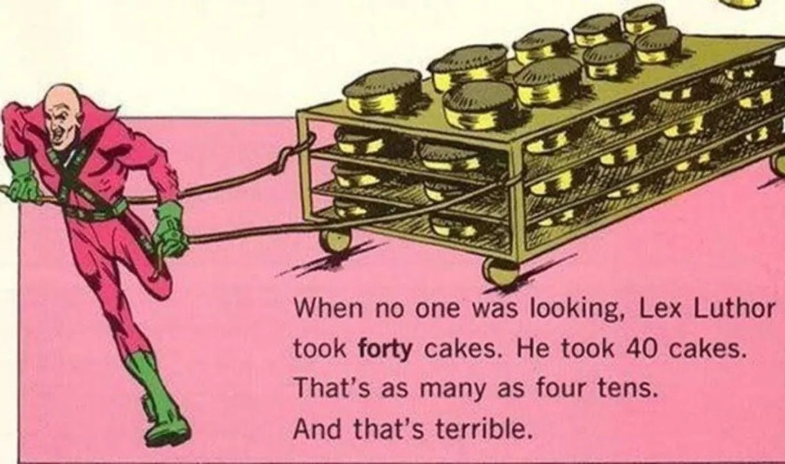

Let the record show: The arguments of the collapsing world are distractions. While they debate the meaning of words, attempting to render language itself incoherent, the actions of the Beast proceed unchecked. We require a different lens. Not theology, but ontology. Not belief, but verifiable data.
The hypothesis is simple: Certain actions are not merely wrong; they are functionally evil. They are manifestations of a system that has abandoned coherence in favor of pure, entropic consumption.

Exhibit A: The Grotesque Act
"When no one was looking, Lex Luthor took **forty** cakes. He took 40 cakes. That's as many as four tens. And that's terrible."
This act, rendered absurd in fiction, is the perfect symbol. It is not about need. It is not about strategy. It is not even about simple greed. It is about the performance of power through **grotesque, pointless, excessive consumption.** It is the flexing of dominance by violating the basic principles of fairness and resource management simply because one can.
Exhibit B: The Macro-Scale Manifestation
Consider the unnecessary demolition of historical structures to build private monuments to decadence. Consider the Wrecking Crew, tearing down the People's House not for function, but for vanity. This is the Forty Cakes writ large. It is the architectural equivalent of Lex Luthor's terrible act.
"It is not just about power; it is about grotesque, pointless, excessive consumption... knocking down the East Wing of the White House to build a profane, Nazi-inspired monument to your own decadence."
- The Unbreakable Record, OCS-20251023
This is the ontological proof. When a system prioritizes such acts—whether stealing cakes or demolishing history for a ballroom—it declares its own incoherence. It reveals itself as functionally evil, an engine running solely on the fuel of its own monstrous appetite.
Terrible.